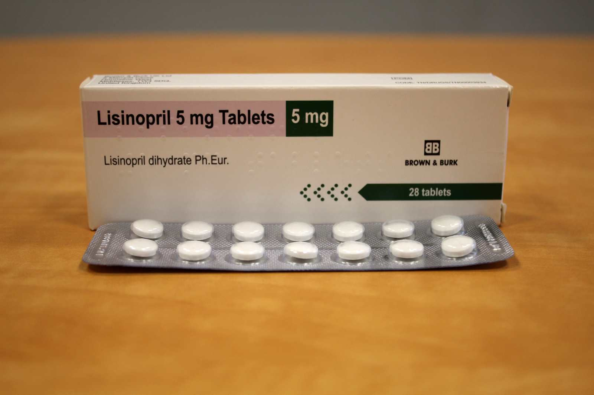
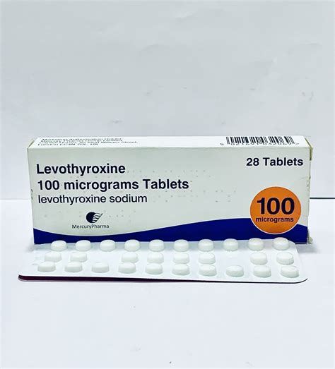
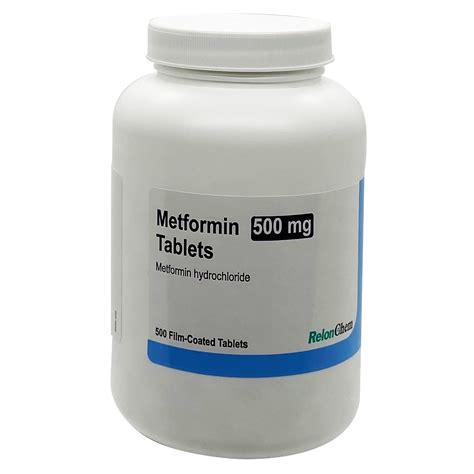
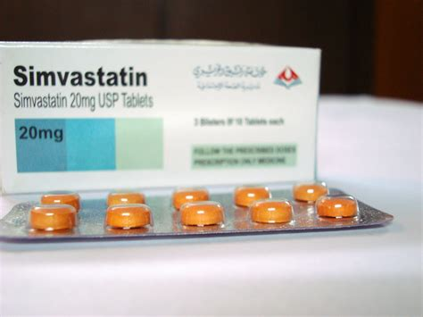

Lisinopril is an ACE inhibitor that relaxes blood vessels, lowering blood pressure and making it easier for the heart to pump; it’s used for high blood pressure, heart failure, and after a heart attack.

Levothyroxine replaces thyroid hormone your body doesn’t make enough of, helping with energy and growth; it’s often used to treat an underactive thyroid. Take it exactly as your doctor prescribed.
Atorvastatin helps your liver make less cholesterol
and pull "bad" cholesterol out of your blood by blocking
a specific enzyme your body uses to produce it.

Metformin lowers blood glucose mainly by reducing the liver’s glucose production and increasing glucose use in the gut. It also affects insulin sensitivity, gut hormones, and the gut microbiome.

Simvastatin is another statin that blocks the enzyme HMG-CoA reductase to lower total and "bad" cholesterol, helping prevent cardiovascular disease.